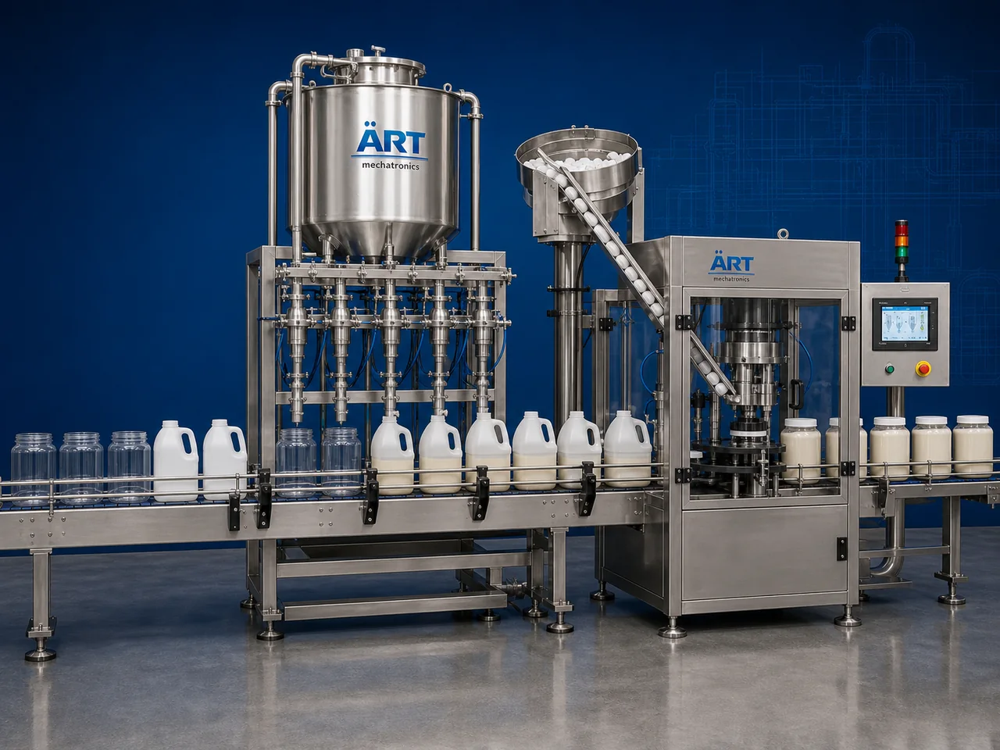

Jar & Jug Packaging Machine (Automatic Jar & Jug Filling & Sealing System)
A Jar & Jug Packaging Machine, also known as a Jar Filling Machine, Jug Filling Machine, Container Packaging Machine, or Automatic Jar & Jug Packaging System, is an advanced industrial packaging solution designed for automatic container feeding, weighing, dosing, liquid or semi-liquid filling,…

About the Jar/ Jug Packing
Jar and jug packaging systems are widely used for: ✔ Beverage jug filling ✔ Edible oil jar packaging ✔ Syrup container filling ✔ Dairy product packaging ✔ Chemical jug filling ✔ Detergent container packaging ✔ Food jar filling ✔ Retail liquid packaging operations
The machine improves: ✔ Filling accuracy ✔ Product hygiene ✔ Leak-proof sealing quality ✔ Shelf life protection ✔ Packaging consistency ✔ Production efficiency ✔ Retail presentation quality
Industrial jar & jug packaging machines use: ✔ Automatic container feeding systems ✔ Servo synchronized filling systems ✔ PLC and HMI automation controls ✔ Precision weighing and dosing mechanisms ✔ Capping and sealing systems
to automatically fill and package jars and jugs with superior packaging quality and high production efficiency.
Jar & jug packaging machines are widely used in industries such as:
Beverage industries Food processing industries Dairy industries Chemical industries Detergent industries Oil industries Agrochemical industries FMCG industries
where hygienic packaging, accurate liquid filling, and leak-proof transportation-safe packaging are essential.
The machine is highly suitable for: ✔ Beverage jug filling ✔ Edible oil packaging ✔ Syrup jar filling ✔ Dairy container packaging ✔ Chemical jug filling ✔ Liquid food packaging
ART Mechatronics offers high-performance jar & jug packaging machines, engineered for continuous industrial operation, hygienic liquid packaging performance, accurate filling quality, and reliable long-term packaging automation.
Working Principle of Jar & Jug Packaging Machine
- 1. Empty Container Feeding Empty jars and jugs are automatically fed into packaging line through synchronized conveyor systems.
- 2. Liquid Filling Process Machine automatically fills liquids or semi-liquids into containers using precision weighing and dosing systems.
Servo synchronization ensures accurate filling and smooth container handling.
- 3. Jar & Jug Filling Operation Machine handles: ✔ Beverages ✔ Edible oils ✔ Syrups ✔ Sauces ✔ Dairy products ✔ Chemicals ✔ Detergents
accurately and continuously.
- 4. Capping & Sealing Process Machine performs: Cap placement Screw capping Leak-proof sealing Tamper-proof sealing Induction sealing (optional)
for hygienic and transportation-safe packaging quality.
- 5. Labeling & Inspection Integration Optional systems include: Wraparound labeling Batch coding Date printing QR code printing Leak testing systems
- 6. Finished Container Discharge Finished jars and jugs discharged automatically for: Cartoning Case packing Retail distribution Export shipment handling
Types of Jar & Jug Packaging Machines
- 1. Beverage Jug Packaging Machine Designed for: ✔ Juice, soft drink, and beverage packaging applications
- 2. Oil Jar Filling Machine Suitable for: ✔ Edible oil and liquid food packaging systems
- 3. Dairy Jug Packaging Machine Uses: ✔ Milk and dairy liquid packaging systems
- 4. Chemical Jug Filling Machine Designed for: ✔ Industrial liquid and detergent packaging systems
- 5. Servo Driven Jar & Jug Packaging Machine Suitable for: ✔ Precision high-speed filling operations
- 6. Fully Automatic Jar & Jug Packaging System Designed for: ✔ Complete industrial liquid packaging automation lines
Industries Using Jar & Jug Packaging Machines
🥤 Beverage Industry Juices, soft drinks, flavored beverages, and bottled liquid packaging systems. 🛢️ Oil & Liquid Food Industry Edible oils, syrups, sauces, and liquid food packaging systems. 🥛 Dairy Industry Milk, flavored dairy products, and liquid dairy packaging systems. ⚗️ Chemical Industry Industrial liquids, detergents, and chemical packaging systems. 🧴 FMCG Industry Consumer liquid products and retail container packaging systems. 🌱 Agrochemical Industry Liquid fertilizers and agricultural chemical packaging systems.
Features & Advantages
✔ High-speed automatic jar and jug filling operation ✔ Accurate weighing and synchronized filling systems ✔ Hygienic and leak-proof packaging quality ✔ PLC and servo automation control systems ✔ Improves product freshness and transportation safety ✔ Reduces product wastage and labor dependency ✔ Supports multiple container sizes and liquid viscosities ✔ Reliable long-term industrial performance ✔ Smooth and continuous packaging operation
Technical Highlights
Machine Type: Automatic jar and jug packaging machine Industrial liquid filling system Container packaging machine Packaging Material: Plastic jars PET jugs HDPE containers Glass jars Filling Integration: Load cell weighing systems Servo dosing systems Volumetric filling systems Flow meter filling systems Features: PLC control system Servo synchronization Touchscreen HMI Automatic capping systems Labeling integration Applications: Beverages Edible oils Syrups Dairy products Chemicals Detergents Automation: Semi-automatic Fully automatic industrial systems
Turnkey Jar & Jug Packaging Solutions
ART Mechatronics offers: Complete jar and jug packaging systems Automatic liquid filling solutions Packaging automation integration systems Conveyor synchronization systems Installation & commissioning After-sales service & AMC
Why Choose Art Mechatronics
Expertise in industrial packaging and automation systems Customized jar and jug packaging solutions for multiple industries High-performance and hygienic filling technology Advanced PLC and servo automation systems Proven industrial packaging performance across sectors
Applications
Beverage Manufacturing Plants Oil Packaging Industries Dairy Processing Facilities Chemical Packaging Units Detergent Manufacturing Plants FMCG Packaging Industries
Get pricing & specs for the Jar/ Jug Packing
Share the product, target capacity, current process and plant location. These details help our engineers discuss the right machine or line configuration.
One partner, from design to start-up
ART Mechatronics designs, manufactures, installs and commissions your Jar/ Jug Packing solution with regional presence in India, UAE and Thailand.